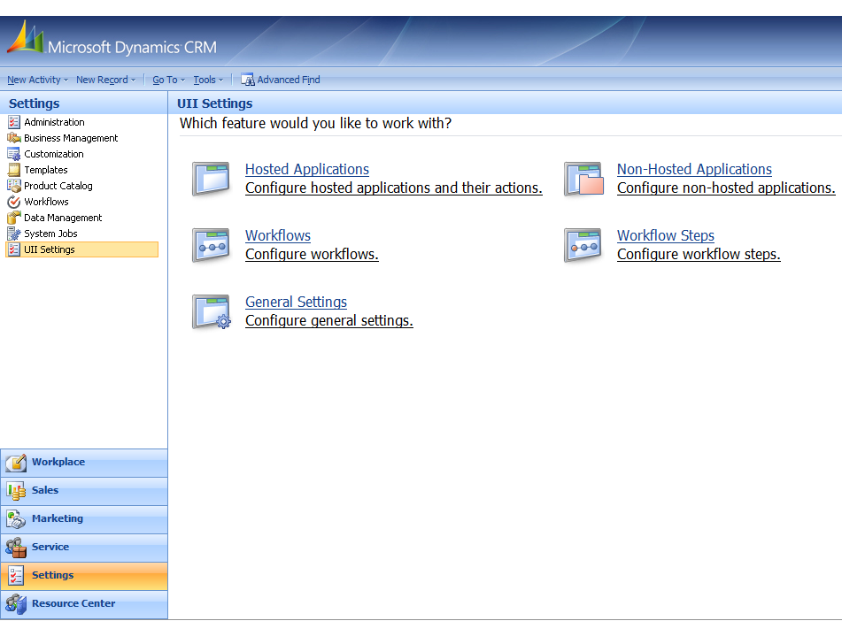

Before you begin the upgrade process, make a backup copy of the data you have created for the organization that is upgrading.
To create a backup copy of the data
- Using CRM administrator credentials, log on to Microsoft Dynamics CRM 4.0.
- In the left navigation pane, click Settings > UII Settings.
The UII Settings page appears, as shown in the following illustration.

- For each feature—Hosted Applications, Non Hosted Applications, Workflows, and Workflow Steps—make a backup copy in the form of Microsoft Excel worksheets of all the data. The following illustration shows the Hosted Applications list. Select each item in the list, and then click the Excel icon.
- The Export Data to Excel dialog appears, as shown in the following illustration. Select Dynamic Worksheet, and then click Edit Columns.
- The Edit Columns page appears, as shown in the following illustration. In the Common Tasks pane (the right pane), click Add Columns to select the records.
- The Add Columns dialog appears, as shown in the following illustration. Select the Display Name check box to select all the records, and then click OK.
- The Edit Column dialog appears. Click OK.
- The Export to Excel dialog appears. Click Export.
- The File Download dialog appears, as shown in the following illustration. Click Save.
- The Save As page appears, as shown in the following illustration. Choose the location for the file download, and then click Save to back up the data for active hosted applications.
- When the following Download complete dialog box appears, click Close.
 Note: Note: |
|---|
| Create backup copies of all the other non-hosted applications, workflows, workflow steps, and so on. Follow the same procedure as in Create a Backup Copy of the Data. You need to open the Microsoft Excel file that you exported and save it with a .csv file name extension. While you try to import this data on to the Microsoft Dynamics CRM, only the files in .csv, .txt, or .zip file formats will be accepted. |
|
Note: |
|---|
| Make sure you do the following to start the migration process: Uninstall the CCA R1 setup and remove all the CCA R1 relevant content from [Install Directory]\Microsoft Uii\CCA. |